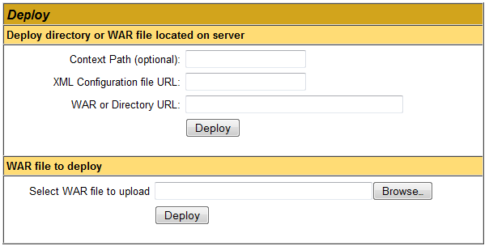

Installation Instructions
Before installing CYANOS be sure that MySQL and Apache Tomcat are installed properly.
Also insure that the MySQL Connector/J is installed in the CLASSPATH of your Apache Tomcat installation.
This is typically the subdirectory /common/lib of the Apache Tomcat installation directory
- Create the CYANOS database in MySQL. Refer to the MySQL documentation for details on how to create a database.
The database can be created by using either the graphical or command line interface.
For the command line interface, the following command would be able to create the database "cyanos".
# mysqladmin create cyanosOr the database can be created within the MySQL command interface.
mysql> create database cyanos - Setup the CYANOS schema in MySQL. Connect to the database created in the previous step and execute the
cyanos_mysql.sqlfile. This file has the necessary SQL commands to create the CYANOS schema. The command can be executed as follows. Please refer to MySQL documentation for more details on using the mysql command-line tool.# mysql cyanos < cyanos_mysql.sql | tee cyanos.logor if a SQL user and password must be specified.
# mysql -u <username> -p <password> cyanos < cyanos_mysql.sql | tee cyanos.logor the SQL file can be executed from within the MySQL command interface. In this case, the
teecommand can be used to log any messages to a file.mysql> tee cyanos.log
mysql> source cyanos_mysql.sql Create SQL account for web application.This SQL account should be allowed the following on cyanos.*
SELECT, INSERT, UPDATE, DELETE, EXECUTERefer to MySQL documentation for details on user administration. For example, if MySQL and Tomcat were installed on the same host, one could create and grant access to an account named
accountnamewith passwordpasswordusing the following command in the MySQL command interface.mysql> GRANT SELECT, INSERT, UPDATE, DELETE, EXECUTE ON cyanos.* TO 'accountname'@'localhost' IDENTIFIED BY 'password';If the Tomcat service was installed on a separate host, e.g.
tomcathost.school.edu, one could create and grant access to an account namedaccountnamewith passwordpasswordusing the following command in the MySQL command interface.mysql> GRANT SELECT, INSERT, UPDATE, DELETE, EXECUTE ON cyanos.* TO 'accountname'@'tomcathost.school.edu' IDENTIFIED BY 'password';- Deploy the WAR file in a Tomcat server.
- Online deployment: (Preferred method)
- Use the Tomcat manager (i.e.,
http://<server>:8080/manager/html) to deploy the application. Use the "WAR file to deploy" option.
 - Offline deployment:
- While the Tomcat server is stopped, copy the included
cyanos.warfile to the webapps directory of the installed Tomcat Application Server.For UNIX systems, this is typically
Start the Tomcat server to complete deployment./usr/share/tomcat5/webapps
and Windows systems,C:\Program Files\Apache Software Foundation\Tomcat 5.5\webapps
- Configure the CYANOS web application context. Customizing the
<Context>definition within the Tomcat configuration files. Thecyanos.warincludes a default context configuration file (context.xml). When the web application is deployed online (see previous step), the Tomcat server will copy thiscontext.xmlfile to$CATALINA_HOME/conf/[enginename]/[hostname]/cyanos.xml. Note: before editing this file is it best to stop the cyanos web application (can be done from the Tomcat manager) then restart after you have completed making the changes to the Context definition.Define the CYANOS JDBC/JNDI resource.
<Resource auth="Container" name="jdbc/CyanosDB"
type="javax.sql.DataSource" driverClassName="com.mysql.jdbc.Driver"
url="jdbc:mysql://<db server>:3306/<database>?autoReconnect=true&useLocalSessionState=true"
username="<username>" password="<password>"
maxActive="100" maxWait="5000" maxIdle="2"
removeAbandoned="true"/>- url
- Change the url parameter to match the information for your database instance. The format of the URL should be as follows.
jdbc:mysql://<db server>:3306/<database>?autoReconnect=true&useLocalSessionState=truedb server should be the name of your database server. "localhost" can be used if the MySQL database is on the same server as the Tomcat service.
database_name should be the name of the database. The default name of the database is "cyanos". Besure to change IF you have changed the name of the database.
If you have installed the MySQL service on the same host as the Tomcat service, and kept the name of the database as "cyanos", then the URL for your database will be...
jdbc:mysql://localhost:3306/cyanos?autoReconnect=true&useLocalSessionState=true - username
- SQL username that has
SELECT, INSERT, UPDATE, DELETE, EXECUTEprivileges for the cyanos database. (see step 3) - password
- Password for the SQL account. (see step 3)
Define a Javamail session. The SMTP host should be a host that can be used by CYANOS to send automated email messages, e.g. password resets. Note: Check with your local IT department to determine a proper SMTP host to use and additional configuration details required.
<Resource name="mail/Session" auth="Container"
type="javax.mail.Session"
mail.smtp.host="localhost"
mail.smtp.from="CYANOS DATABASE <do-not-reply@cyanos>"/>- mail.smtp.host
- Hostname for the SMTP server.
Can be
localhostif the SMTP service is on the same server as the Tomcat service. - mail.smtp.from
The from address for all emails sent by CYANOS. Email address standards allow a display name to be included with an email address. In those instances, the display name is placed before the email address and the email address is enclosed in angle brackets ("<", ">"). For example...
John Smith <john.smith@nowhere.com>
The angle brackets are a special character in XML files and must be written as "<" and ">" in text values. Theses escape codes will then be converted when the file is processed. For example, the previous address would appear as follows in this configuration file.
John Smith <john.smith@nowhere.com>
If additional configuration is required, e.g. SSL, add the following attributes to the Resource definition below.
- mail.smtp.starttls.enable
- Set this attribute to
"true"to enable the use of STARTTLS for encryption. - mail.smtp.starttls.required
- Set this attribute to
"true"to require a successful STARTTLS for all SMTP communications. - mail.smtp.ssl.enable
- Set this attribute
"true"to enable SMTP over SSL. The default port SMTP will then be 465. - mail.smtp.port
- This attribute can be used to change the port used to contact the SMTP server. The default is 25 for normal SMTP and 465 for SMTP over SSL.
Once these configuration steps are complete, be sure to restart the application to allow these settings to become active. If using the Tomcat Administration Tool, click the Commit Changes button to save the changes and restart the application.
- Access the CYANOS web application to perform the initial setup.
The application should be available at
http://<server>/cyanosAlthough, this may change depending on the local configuration.